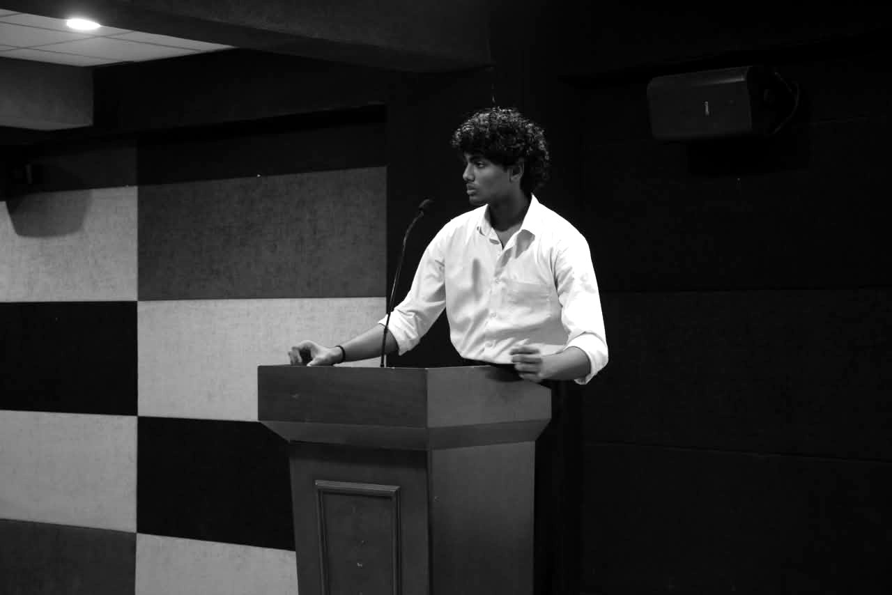
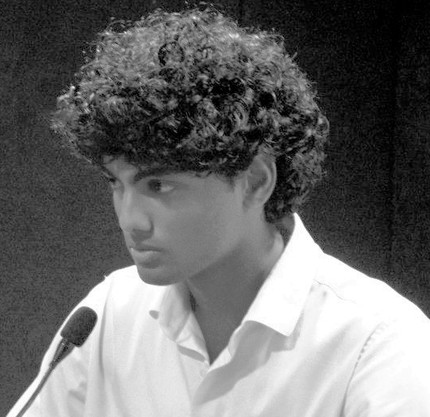

Applied ML & LLMs
Vision-language pipelines, sentence embeddings, anomaly detection and survival models — measured against benchmarks and held-out sets, never vibes.
return RAWRS — shipped to WinVinaya, dailyB.E. CSEEst. 2029CGPA 8.03
01 — Intro

AI/ML ENGINEER
I build and ship AI systems end to end — from vision-language document accessibility used daily by real teams, to blind radio-signal decoding, to bit-exact model quantization merged into llama.cpp.
Selected work↓02 — Selected Work
— Playground
try help, ls, open rawrs, neofetch · ↑/↓ history · Tab completes
03 — About
I'm building AI that reaches real users — a tool used daily at WinVinaya, a hackathon-grade audit engine, a signal decoder from first principles. I test design decisions against benchmarks and held-out sets, and I care about systems that stay reviewable and reversible. Long game: found my own company.
— What I do
Vision-language pipelines, sentence embeddings, anomaly detection and survival models — measured against benchmarks and held-out sets, never vibes.
return RAWRS — shipped to WinVinaya, dailyData pipeline → API → UI, by one person: FastAPI + Pydantic on the back, React + TypeScript on the front, Docker and CI around it.
return idea → production, one hand on itWhen there's no library for it, I build the hard part myself — Viterbi decoders, bit-exact quantization, statistical significance tests.
return ICHNOVA — 30/30, 0 false acceptsI contribute to the tools I use. I read code I didn't write and leave it better than I found it.
return llama.cpp #30630 — merged— the toolbox
AI / ML
Languages & frameworks
Data & documents
Tooling
— the path so far
WinVinaya InfoSystems · Bangalore
Sole developer of RAWRS, a Qwen2.5-VL document-accessibility platform remediators use almost daily — ~3h per document down to 10–20 min. Cut reviewer workload ~70% by finding and merging ~385 duplicate checks, no evidence dropped.
ggml-org · PR #30630, merged
Added NumPy Q1_0 & Q2_0 GGUF de/quantization to gguf-py so Python tools can load 1- and 2-bit models. Bit-exact with the C reference — 66/66 checks across 27 quant types.
Smart India Hackathon 2026
Thadam: audit intelligence over 476,781 lifecycle events — sentence embeddings, learned archetypes, Cox survival risk. ICHNOVA: a blind radio-signal decoder from first principles — 30/30 held-out, 0 false accepts, verified on real WWV / WWVB / DCF77 signals.
St. Joseph's Institute of Technology, Chennai · CGPA 8.03
2× winner of SJIT's internal Smart India Hackathon selection (2025, 2026). 3rd — Quantathon (SRM) · 3rd — Cyberfest '26 (KCG) · Special Mention — V-VORTEX (VIT Chennai).
— the one you're looking at
Second year of CSE, already in production a real company runs on. I decode radio from nothing but the raw signal, and I merged into llama.cpp while most people are still fixing their first bug. No demos, no maybes — I build it, then make it prove itself. Move across the frame; it sharpens where you look.

04 — Open Source
Added 1-bit and 2-bit GGUF de/quantization to the Python library so tools can load models (e.g. Bonsai) that previously failed with NotImplementedError. Matched the C reference bit for bit — 66/66 checks across 27 quant types.
— live from GitHub
fetching @SomeNobody21112 …
— the merge, running
The quantizer I shipped to llama.cpp, made visible: a plane of 32-bit weights collapsing block by block onto just four levels — the whole trick behind Q2_0. A model gets roughly sixteen times lighter, and still speaks.
— you reached the end, comrade
Vladimir “Longcat” Pawtin — a communist black cat, allegedly both alive and dead. Pet him, feed him, point the laser, or ask him anything about me.
05 — Contact